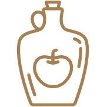

10 simple ways
to manage sugar
As we go about our hectic, busy days, it can be very easy to resort to a sugary snack midway through the afternoon to keep your energy levels elevated.
read more
Drink apple cider vinegar
According to Sepel, adding one or two tablespoons of apple cider vinegar to a large bottle of water
Keep to regular mealtimes
This may seem like an obvious suggestion, but eating your meals at regular, spaced out intervals
Eat fruit in the morning
We're told that we should eat five portions of fruits and vegetables a day in an effort to maintain a healthy lifestyle.